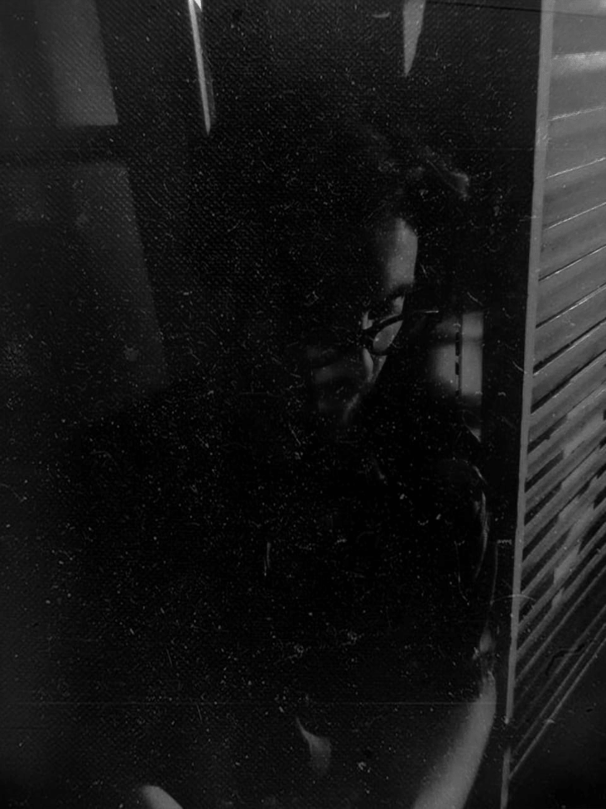

Gabriel Alberini, oriundo de la ciudad de San Justo, Santa Fe. 26 años. Cumplo años los 28 de junio, canceriano. Me gustan mucho los fideos y más si se acompañan con milanesa. Desde pequeño me relacione con el arte, primero yendo al teatro con mi madre y luego haciendo todo lo que hice y hago. La gente que me rodea también está inmersa en el arte, a sea por obtener estudios al respecto o porque aún no está enterada. El arte como lenguaje único del universo. Invención y creación del lenguaje. En 2012 llego a la ciudad de Santa Fe a estudiar teatro. Participo de algunos grupos de teatro independiente y coordino talleres. Actualmente estudiando programación web, pues al fin, todo se relaciona.